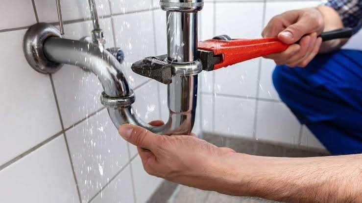

Instalaciones de fontanería
Especialistas en reparación, instalación y mantenimiento de tuberías y sistemas hidráulicos.
Servicios de Gas
Instalación y mantenimiento de sistemas de gas seguros, eficientes y adaptados a cada cliente.

Desatascos de Fregaderos
Eliminamos atascos con equipos profesionales, restaurando el flujo normal del agua.